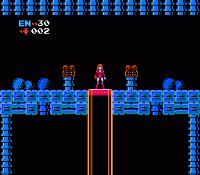

Metroid Edit

Metroid Edit
|
|
The Metroid hack is about 60% completed - Brinstar, Norfair and Tourian have been completely renovated and all that remain are Kraid and Ridley's hideouts. The complete hack will feature changes to objects, rooms, room placement, and enemy placement, and possibly even item placement and music editing. It has of course been designed to be substantially tougher than the original, but many of the impossible-to-find hidden passages have been removed. My goal is to test the player's skill, not their aptitude for tedious treasure hunts. I've included a couple screenshots here to whet your appetite. More details soon... | |
|  |
| Copyright © 1997-1999 Jay McGavren. All Rights Reserved. |